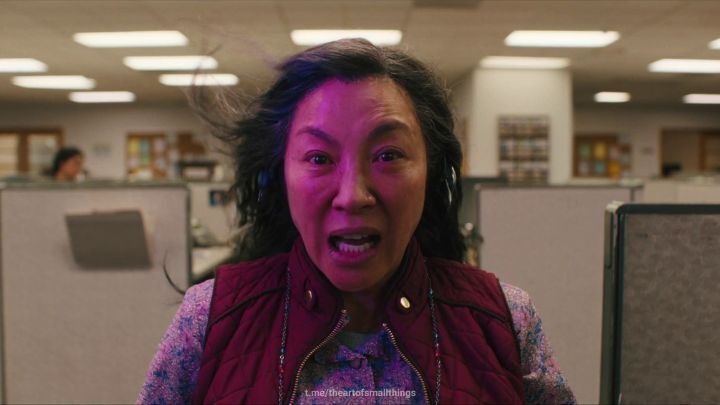

EVERYWHERE ALL AT ONCE
(Tradução: Tudo em Todo o Lugar ao Mesmo Tempo)

Evelyn Wang (interpretada com primor por Michelle Yeoh) é uma imigrante chinesa que vive com sua família nos EUA e administra uma lavanderia.
Extremamente frustrada, ela não consegue ver beleza e significado em sua vida.
A filha Joy (Stephanie Hsu) e o marido Waymond (Ke Huy Quan) sentem o desprezo de Evelyn, que também precisa lidar
com a vinda de seu pai Gong Gong (James Hong) e a relação complicada com ele, além de grandes problemas financeiros com a receita federal.
Quando Evelyn, Waymond e Gong Gong estão no elevador do prédio da Receita Federal, prestes a ter uma conversa
definitiva com auditora fiscal Deirdre Beaubeirdre (Jamie Lee Curtis), algo excepcional acontece.